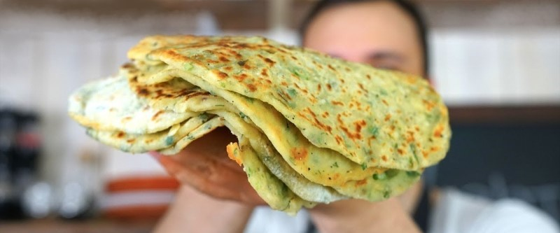

Картофельные лепешки

- картофель — 4 шт
- зелень — укроп, петрушка, зелёный лук
- оливковое масло — 2 ст. л.
- мука
Почистить и сварить целиком 4 картофелины, остудить, раздавить до однородной консистенции. Порезать мелко достаточное количество зелени (укроп, петрушка, зеленый лук), добавить в картофель, добавить 2 ст.л. оливкового масла, соль, свежемолотый перец. Вводить постепенно просеянную муку, пока не станет отлипать от рук, но не совсем забьется.
Поставить греться сковороду с растительным маслом.
Отсчипывать кусочек от теста, раскатать скалкой тонко до диаметра сковороды, обжаривать с двух сторон.
Можно в нее заворачивать мясо, овощи, можно подавать вместо хлеба или гарнира.
 Назад к списку рецептов
Назад к списку рецептов